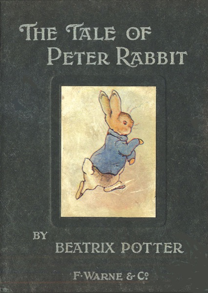
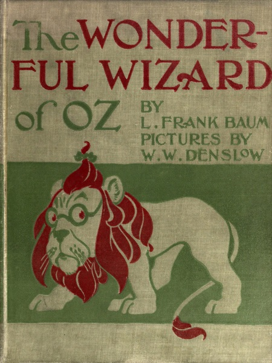
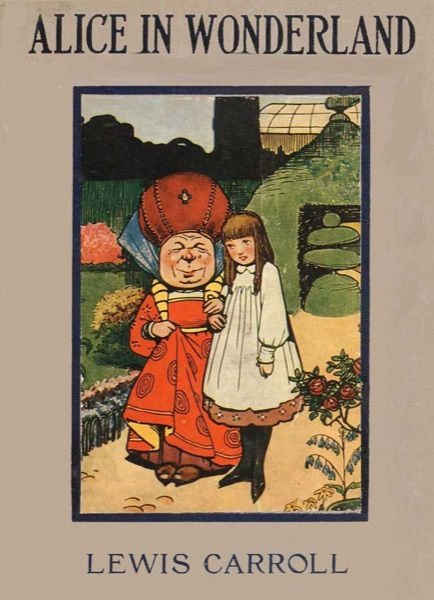
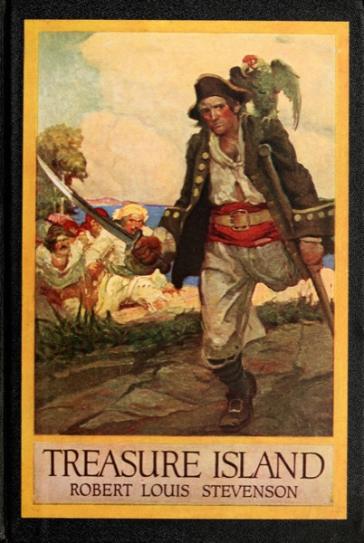

Free Classic Books for Kids Who Find Reading Hard
Peter Rabbit, The Wizard of Oz, Treasure Island. Classic stories are part of growing up, but for a child who finds reading hard, an old book full of long sentences can feel out of reach. It does not have to be. Many classics are free, and there are gentle ways to share them.
Here is why classics are still worth it for kids with dyslexia, which ones to start with, how to make them easier, and where to find them for free.
Why classics are still worth it
A child who struggles to decode words may still follow a rich story with ease. Teachers often notice that students with dyslexia understand what is going on when a book is read to them, even at a high level (Understood). Research on reading comprehension also suggests that children with dyslexia can use their language skills and what they already know to make up for some of their decoding difficulty (Frontiers in Psychology, 2016).
That is why reading aloud stays valuable long after kids learn to read on their own, especially for kids who learn and think differently. It lets them enjoy stories written at a higher level, with bigger themes and more grown-up characters (Understood). A classic your child cannot read alone yet can still be a classic they love.
Listening counts
Some parents worry that listening to a book is a shortcut. It is not. Listening to audiobooks isn't cheating, because the main purpose of reading is to get information (Understood). Audiobooks can also help kids build vocabulary and background knowledge (Understood).
It works even better when your child can see the words while hearing them. Reading with eyes and ears at the same time makes reading multisensory, and hearing words while seeing them helps kids connect sounds and letters (Understood). Our guide to text-to-speech for dyslexia explains what the research says about listening while reading.
Choosing the right classic
When your child reads on their own, pick books at their reading level rather than their grade level, and about things they care about. This can reduce frustration (Understood). Books that are too hard can discourage kids (Understood).
When you read together or your child listens, you can aim higher. Shorter, illustrated classics are a friendly first step, and longer novels work well as a shared read-aloud, a chapter at a time.
One more thing to keep in mind: old books reflect the times they were written in. Reading ahead, or listening first yourself, helps you spot anything you want to talk about with your child.
Classics to start with, by age
These are our suggestions, grouped the way we group them in our app. Every child is different, so treat the ages as a loose guide.




First stories (about ages 5 to 7)
- Beatrix Potter's tales: The Tale of Peter Rabbit, The Tale of Benjamin Bunny, The Tale of Squirrel Nutkin, The Tale of Tom Kitten, and The Tale of Jemima Puddle-Duck. Each one is short enough to finish in one sitting.
- The Velveteen Rabbit by Margery Williams: a toy rabbit who wants to become Real.
Chapter books (about ages 8 to 10)
- Alice's Adventures in Wonderland by Lewis Carroll: a trip down the rabbit hole.
- The Wonderful Wizard of Oz by L. Frank Baum: Dorothy, Toto, and the yellow brick road.
- The Adventures of Pinocchio by Carlo Collodi: a wooden puppet who wants to become a real boy.
- Grimms' Fairy Tales: short stories like Hansel and Gretel, good for one story a night.
Classic novels (about ages 10 and up)
- The Wind in the Willows by Kenneth Grahame: Mole, Rat, Badger, and the boastful Mr. Toad.
- Black Beauty by Anna Sewell: a horse tells the story of his life.
- Treasure Island by Robert Louis Stevenson: a treasure map, a ship, and pirates.
- Anne of Green Gables by L. M. Montgomery: a chatty, red-haired orphan finds a home.
Making a harder book feel easier
- Read it together. Take turns, or read aloud while your child follows the words.
- Pause and talk. Stop to talk about what is happening and what the harder words mean (Understood). Old-fashioned words and tricky names are a good place to start.
- Take breaks. If your child gets frustrated, take a brain break and come back to the book with a clear mind (Understood).
- Change how the text looks. A bigger font, more space between lines, and a softer background can make a page feel less crowded. Our guide to the best font for dyslexia covers what helps, and our iPhone and iPad setup guide shows the settings to change.
Where to find them for free
Many classics are in the public domain, which means anyone can share them. In the United States, works published in 1930 entered the public domain on January 1, 2026 (Duke Center for the Study of the Public Domain). All the books above were published well before then. Copyright rules are different in other countries.
- Your public library. Libby is a free app for ebooks and audiobooks from your public library, and everything in it is free to borrow with a library card (Libby Help).
- Bookshare. Bookshare is free for U.S. students with a qualifying disability, including dyslexia, and an IEP is not required (Bookshare).
- Our app. The free Library in DyslexiaBuddy has the 14 classics listed above, sorted by age. Your child can read them on iPhone or iPad and have them read aloud as each word lights up. The books are free; natural AI voices are part of Premium.
If you are not sure whether your child's reading struggles could be dyslexia, our guide to the signs of dyslexia by age is a good place to start.
Sources
- Understood (In It podcast): Have a struggling reader? Try these tips
- Frontiers in Psychology (2016): Reading comprehension assessment through retelling
- Understood: 4 reasons to keep reading to your grade-schooler
- Understood: Do audiobooks get in the way of learning to read?
- Understood: How to help kids with reading at home
- Understood: 4 steps to choosing books at your child's reading level
- Understood: 6 reasons why kids refuse to read
- Understood: Why kids have trouble understanding or remembering what they read
- Duke Center for the Study of the Public Domain: Public Domain Day 2026
- Libby Help: What is Libby?
- Bookshare: Free audiobooks for your struggling reader
This article is for general information. It is not medical or educational advice for your child. If you are worried about your child's reading, talk to their school or a qualified professional.
14 classic stories, free
Read along as each word lights up. Free to download on iPhone and iPad.
Download the app